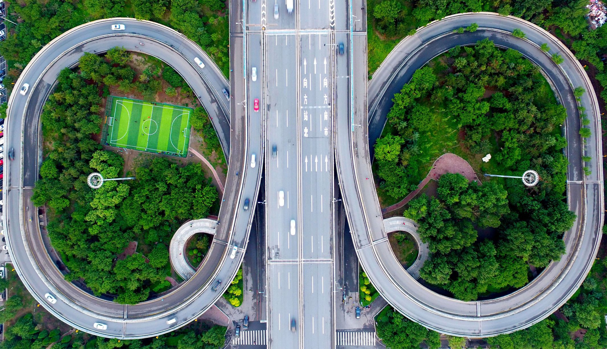
On this page we will learn about some football stadiums in the English Premier League and the most important events hosted by them:
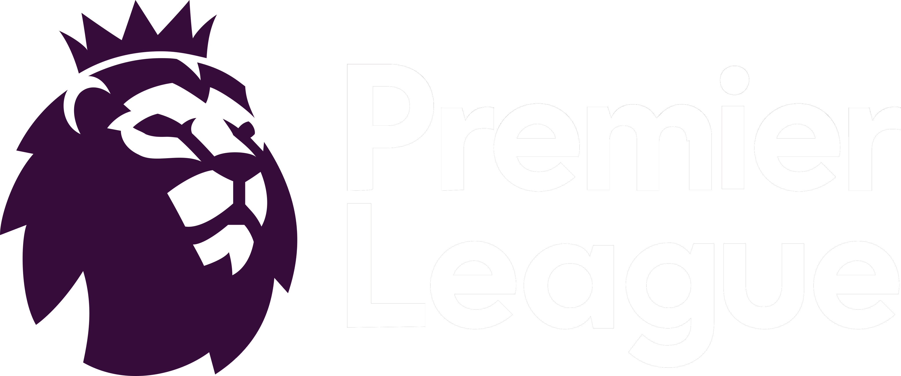Topics
1- Wimply Stadium
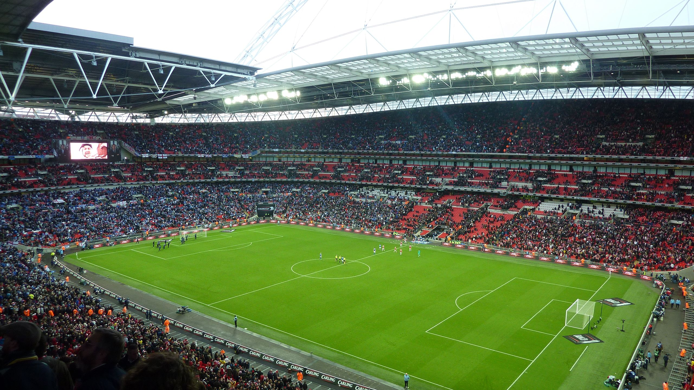Wembley Stadium is the main stadium to host the England national football team matches, as well as to host the FA Cup finals, as well as the temporary stadium for Tottenham Hotspur. Wembley Stadium can accommodate about 90,000 spectators as the second largest stadium in Europe and the largest stadium in England The stadium opened in 2007 after it was demolished to renovate it in 2007
-
And among the most important events hosted by the stadium and records:
- Twice UEFA Champions League Final 2011-2013.
- London Olympics 2012.
- The first hat-trick at the new Wembley was Gambello Pazzini
2- Anfield Stadium
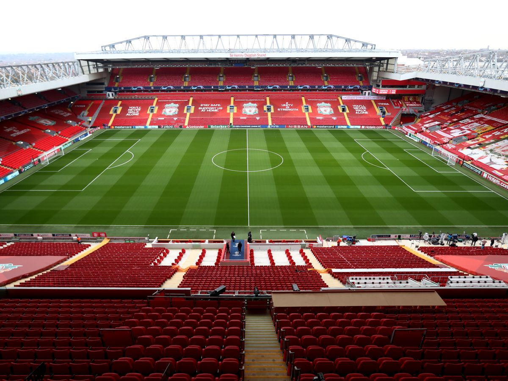Anfield Stadium was opened in 1885 and is the official stadium for Liverpool FC, after it was the former stadium of Everton FC until 1892. The stadium has a capacity of 54,000 spectators after its maintenance and expansion.
-
And among the most important events hosted by the stadium and records:
- It was one of the stadiums used during Euro 1996
- He hosted several matches for the England national team, and the last match was in 2006 when the England national team beat Uruguay 2-1
- The highest attendance ever recorded at Anfield was 61,905 for the Liverpool-Wolverhampton Wanderers match in the FA Cup 1952
3- Old Trafford Stadium
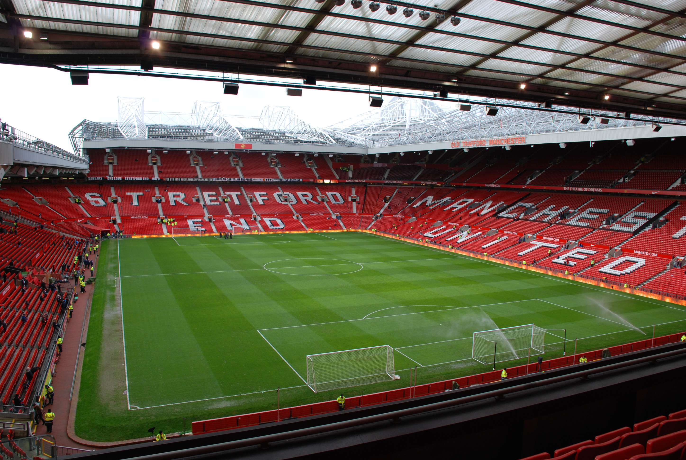The stadium called the Theater of Dreams, which opened in 1910, is the current stadium of Manchester United Old Trafford stadium can accommodate 76,000 spectators and is considered the second in England in terms of the number of fans.
-
And among the most important events hosted by the stadium and records:
- It was one of the stadiums used during Euro 1996
- The stadium hosted the England national team matches and matches in the 1966 World Cup
- The final match of the Rugby League Premier League has been held at this stadium every year since 1998
- The highest attendance at the stadium was in 1939, when 76,962 spectators attended the FA Cup between Wolverhampton Wanderers and Grimps Town
4- Emirates stadium
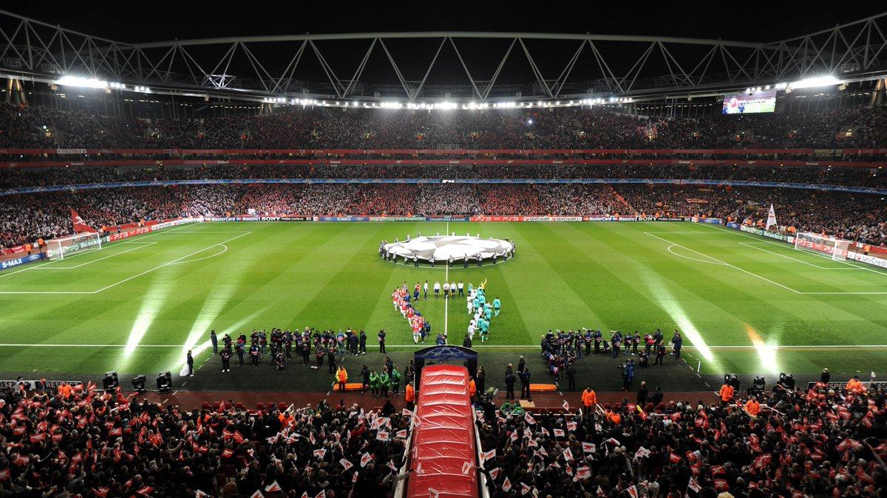It is the third largest stadium in England, with a capacity of 60 thousand spectators. It is the official stadium of Arsenal FC. It opened in 2006 in North London, England
-
And among the most important events hosted by the stadium and records:
- Arsenal's first official match at the stadium was in the English Premier League against Aston Villa on August 19, 2006, with 60,023 spectators attending
- Emirates Stadium hosted its first international match on September 3, 2006, between the Brazilian national team against the Argentine national team
5- Saint James Park Stadium
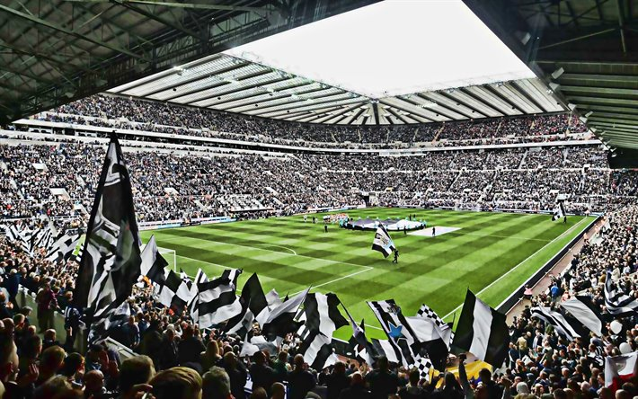It was opened in 1892 and is the stadium of Newcastle United Club, since it is one of the oldest stadiums in England. The stadium can accommodate 52,000 spectators as the eighth largest stadium in England in terms of capacity.
-
And among the most important events hosted by the stadium and records:
- Hosted 3 matches in the 1996 European Football Championship
- He hosted 6 matches during the London 2012 Olympic Games
6-Stamford Bridge Stadium
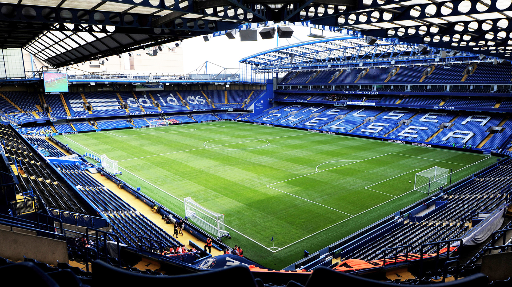It is the stadium of Chelsea FC. The stadium was opened in 1877 with a capacity of 41,000 spectators.
-
And among the most important events hosted by the stadium and records:
- 3 Year FA Cup Final (1920, 1921, 1922)
- Five international matches played by England between 1909-1946
- The highest crowd in Stamford Bridge's history was in the 2006-2007 season, with an average of 41,909 spectators
7-London Stadium
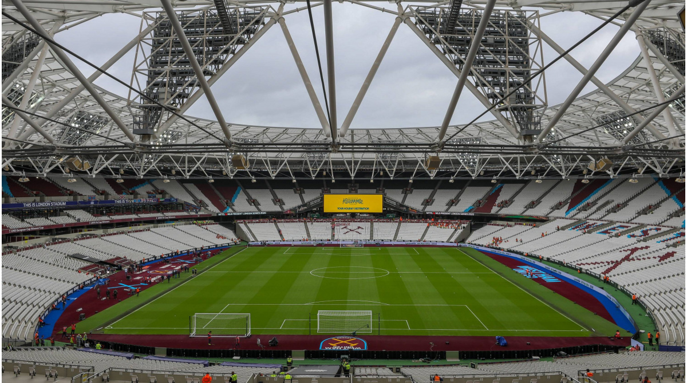It is a stadium built for the Olympic Games in 2012, with a capacity of 67,000 spectators. The stadium opened in 2011 and is the current home of West Ham United
8-Bramall Lane Stadium
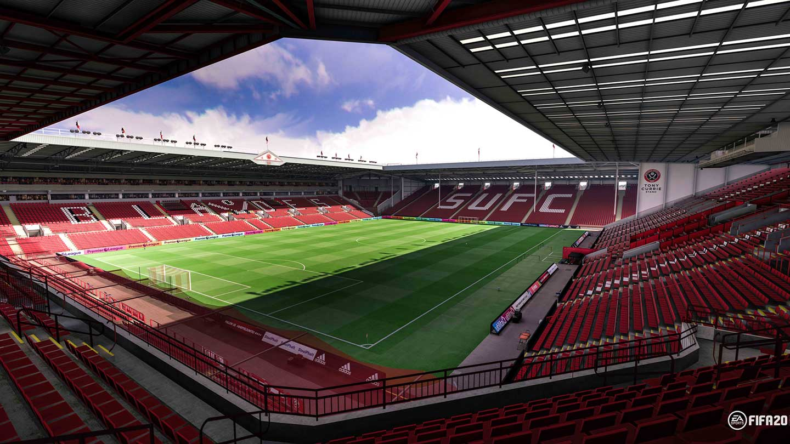Bramol Lane Stadium is considered the oldest football stadium in the world. It was opened in 1855 and is still in operation today , though it has been renovated several times. It is considered the official stadium of Sheffield United FC since it was founded in 1889 And the stadium currently has a capacity of 32,000 spectators after the last renovation in 2006
-
And among the most important events hosted by the stadium and records:
- Hosted the FA Cup Final in 1912
- He regularly hosted the FA Cup semi-finals between 1889 and 1938
- The highest attendance on the field was 68,000 spectators in 1936
9- Molineux Stadium
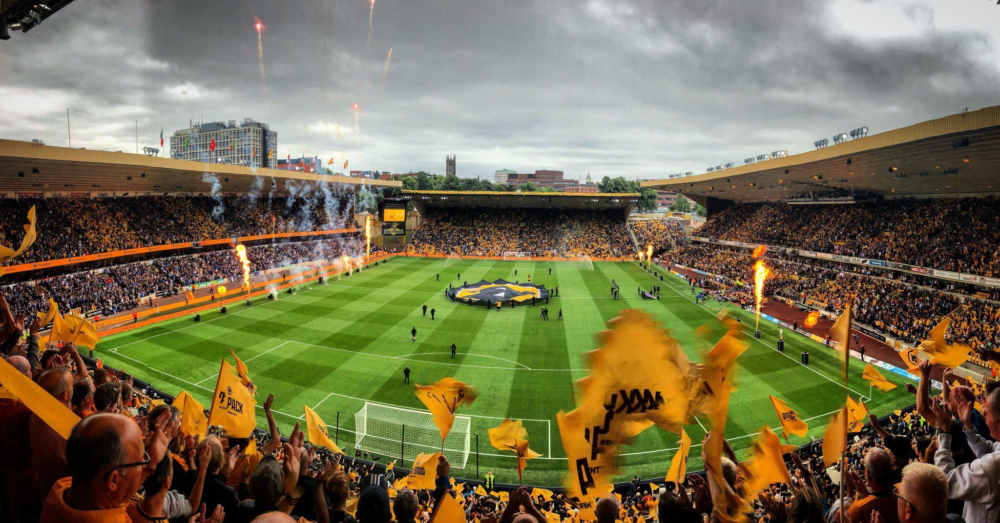It is the official stadium of Wolverhampton Club. The stadium was opened in 1889 and was last renovated in 1991 The stadium can accommodate 30,000 spectators
-
And among the most important events hosted by the stadium and records:
- England and Denmark in 1956 in the World Cup qualifiers
- The stadium will host the England match this year for the first time since 1956 in June against Italy in the European Nations League
10-Villa Park Stadium
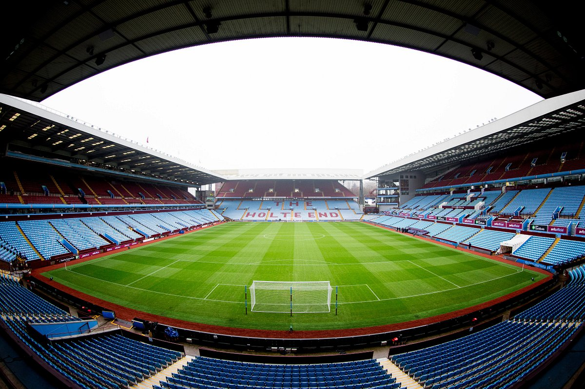It was opened in 1897, and it is the official stadium of Astan Villa Club, and the stadium can accommodate 42,000 spectators.
-
And among the most important events hosted by the stadium and records:
- The most stadiums in England that have hosted the semi-finals of the FA Cup.